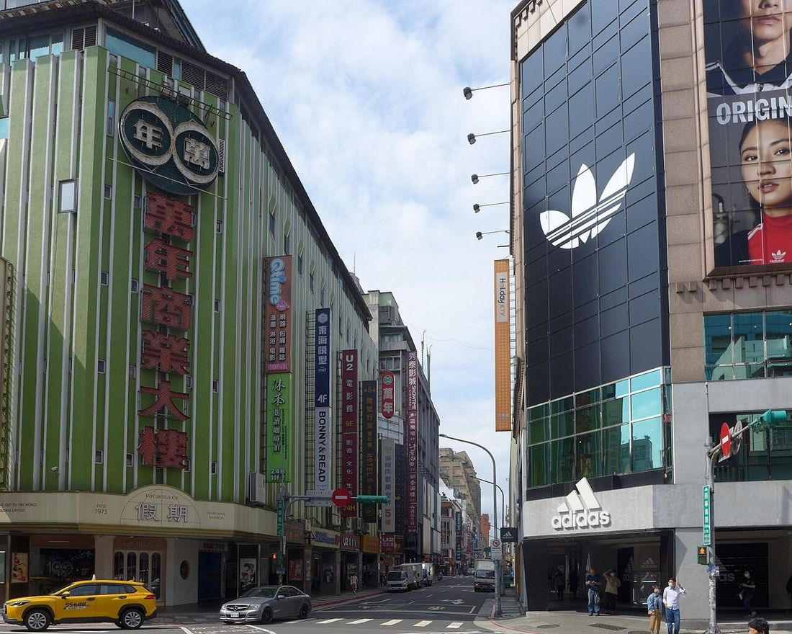

台北老店．西門町
野人咖啡：防空洞裡的六〇年代
一九六〇年代末，西門町有一家咖啡館，開在防空洞裡。

它叫「野人」，在峨嵋街的地下室，天花板大概只有一百八十公分。它只開了幾年，卻被寫進兩部台灣文學作品。
防空洞改成的咖啡館
地下室原本是防空洞。出資開店的，是後來創辦兄弟飯店的洪騰勝，和一位美國青年梅心怡。
會被寫滿的燈罩
店裡十一張小桌，每桌一盞燈，燈罩是薄木片捲的，客人會在上面寫字，寫滿了就換。牆上掛著畫家席德進的畫，當時他還沒成名。
披頭四、巴布狄倫，和兩本小說
唱機放的是披頭四、巴布狄倫這些西洋音樂。林懷民的小說〈蟬〉、白先勇的《孽子》，都寫到了這家店。
只開了幾年
開了沒幾年，就在一九七〇年前後收掉了。洪騰勝後來創辦了兄弟飯店，還有兄弟象棒球隊。
專業點：越黑越提神？
很多人以為咖啡越黑越提神，其實咖啡因跟烘焙深淺沒有絕對關係，主要看豆種、粉量和萃取方式。
老照片與街景

店家資訊
- 店家
- 野人咖啡（已歇業）
- 地點
- 台北市萬華區峨嵋街一帶
- 現況
- 已歇業，可看原址
- 營業時間
- 常有變動，出發前請再確認
- IG 影片
- 12/15 上片
你讀過〈蟬〉或《孽子》嗎？書裡哪一段讓你印象最深？留言告訴我們
到 IG 留言告訴我們
到 IG 留言告訴我們